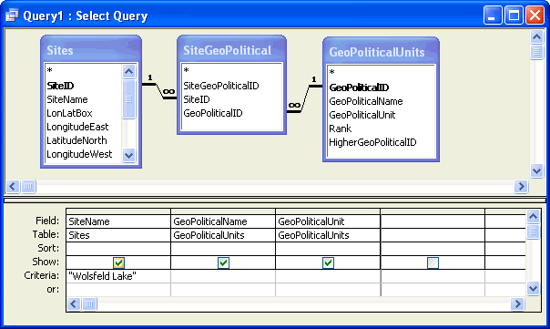
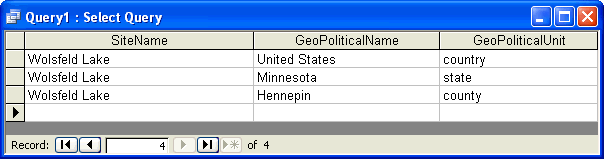

SQL Quickly¶
SQL (Sturctured Query Language) is a standard language for querying and modifying relational databases. It is an ANSI and ISO standard, although various vendors have added proprietary extensions. It is beyond the scope of this document to describe SQL or the differences between Microsoft Access SQL and ANSI SQL. However, examples of SQL queries are provided in this document as a tutorial. Most users of Access probably use the graphical design view for queries, but SQL queries are better suited for examples. These queries can by typed or copied and pasted into the Access query SQL view. The query can then be executed or opened in design view to show the graphical representation. One difference between Access SQL and other flavors is the wildcard; Access uses * rather than %.
SQL Example¶
The following SQL example lists the Geopolitical units for . The Design View and results of this query are shown in Figure 7 and Figure 8.
SELECT Sites.SiteName, GeoPoliticalUnits.GeoPoliticalName, GeoPoliticalUnits.GeoPoliticalUnit
FROM GeoPoliticalUnits INNER JOIN (Sites INNER JOIN SiteGeoPolitical ON Sites.SiteID = SiteGeoPolitical.SiteID) ON GeoPoliticalUnits.GeoPoliticalID = SiteGeoPolitical.GeoPoliticalID
WHERE (((Sites.SiteName)=””));

Figure 7. Design view an Access query listing the GeoPoliticalUnits for .

Figure 8. Results of the query listing the GeoPoliticalUnits for Wolsfeld Lake.
Data Types¶
In the table descriptions in the following section, the SQL Server data types are given for field descriptions. The equivalent Access data types are given in the following table.
| SQL Server data type | Access data type |
|---|---|
| bit | Yes/No |
| datetime | Date/Time |
| float | Double |
| int | Long Integer |
| nvarchar(n), where n = 1 to 4000 | Text |
| nvarchar(MAX) | Memo |